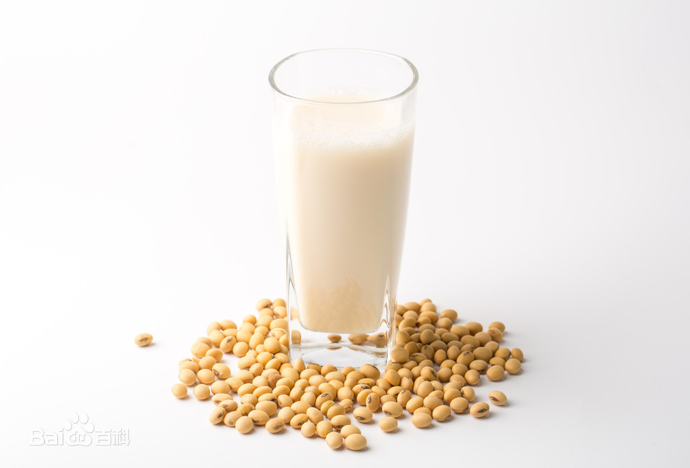

豆浆是中国人民喜爱的一种饮品，又是一种老少皆宜的营养食品，在欧美享有“植物奶”的美誉。豆浆含有丰富的植物蛋白和磷脂，还含有维生素B1.B2和烟酸。此外，豆浆还含有铁、钙等矿物质，尤其是其所含的钙，非常适合于各种人群，包括老人、成年人、青少年、儿童等等。
鲜豆浆四季都可饮用。春秋饮豆浆，滋阴润燥，调和阴阳；夏饮豆浆，消热防暑，生津解渴；冬饮豆浆，祛寒暖胃，滋养进补。其实，除了传统的黄豆浆外，豆浆还有很多花样，红枣、枸杞、绿豆、百合等都可以成为豆浆的配料。
豆浆起源于中国，相传是1900多年前西汉淮南王刘安所发明。刘安在淮南八公山上炼丹时，偶尔将石膏点入豆浆之中，经化学变化成了豆腐，豆腐从此问世，这在诸多典籍中均有记载。
现磨豆浆是1900多年前的西汉淮南王刘安制作的，所以说已经有接近2000年的历史了。那么是怎么想到造现磨豆浆的呢？那就是因为：相传刘安是孝子，其母患病期间，刘安每天用泡好的黄豆磨豆浆给母亲喝，刘母的病很快就好了，从此豆浆就渐渐在民间流行开来。现磨豆浆是中国发明、中国制造的，中国有很权威的持有权。
 了解更多戳此